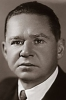
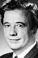

Also known as:Снежная королева (original title)
Country:Russia, 64 minutes
Spoken languages:
Genres:Animation, Family, Fantasy
Director(s):Lev Atamanov
Writer(s):Hans Christian Andersen, Nikolay Erdman, Lev Atamanov, Georgiy Grebner
Video Codec:Unknown
Number: 1301


Certification:NR
Storyline:
When the Snow Queen, a lonely and powerful fairy, kidnaps the human boy Kay, his best friend Gerda must overcome many obstacles on her journey to rescue him.
Cast:  
Medium: Original DVD,
Comments: Part of: A Collection of Christmas Classics
Loaned: No
Aspect ratio: Unknown